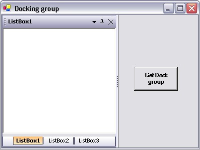

To get the docking group
There is no concept of 'group' in Docking Manager and a tabbed group is just an intermediate state. However, if necessary, this can be determined by first ascertaining that the control is in a tabbed docking group, getting hold of the DockTabController, it’s DockTab and then iterating the DockTabPages. The dhcClient member of each DockTabPage will reference the DockHostController that is associated with it. Once the controller is available, you can get to the control through the DockHostController.HostControl property and use the control’s Controls[0] indexer to get the actual dockable control.
Follow the given steps to get the docking group.
1. Add three listboxes, a button and a docking manager to the form.
2. Set the EnableDocking on Docking Manager property to true.
3. Add the namespace Syncfusion.Windows.Forms.Tools in your application.
|
[C#]
using Syncfusion.Windows.Forms.Tools; |
|
[VB.NET]
Imports Syncfusion.Windows.Forms.Tools |
4. Tab the controls as shown below.

Figure 104: Docking Group dialog box to get the Docking Group Details
Add the code given below in the button click event.
|
[C#]
Syncfusion.Windows.Forms.Tools.DockHost dhost = this.listBox1.Parent as Syncfusion.Windows.Forms.Tools.DockHost; Syncfusion.Windows.Forms.Tools.DockHostController dhc = dhost.InternalController as Syncfusion.Windows.Forms.Tools.DockHostController; // If ParentController is DockTabController the control will be in a tab. if(dhc.ParentController is Syncfusion.Windows.Forms.Tools.DockTabController) { // Getting the DockTabControl from the DockTabController. Syncfusion.Windows.Forms.Tools.DockTabControl docktab = (dhc.ParentController as Syncfusion.Windows.Forms.Tools.DockTabController).TabControl;
// Iterating through the tabpages to get other controls in that tab. foreach(DockTabPage tabpage in docktab.TabPages) { Control siblingcontrol = tabpage.dhcClient.HostControl.Controls[0]; MessageBox.Show(siblingcontrol.Name); } } |
|
[VB.NET]
Dim dhost As Syncfusion.Windows.Forms.Tools.DockHost = CType(IIf(TypeOf Me.listBox1.Parent Is Syncfusion.Windows.Forms.Tools.DockHost, Me.listBox1.Parent, Nothing), Syncfusion.Windows.Forms.Tools.DockHost) Dim dhc As Syncfusion.Windows.Forms.Tools.DockHostController = CType(IIf(TypeOf dhost.InternalController Is Syncfusion.Windows.Forms.Tools.DockHostController, dhost.InternalController, Nothing), Syncfusion.Windows.Forms.Tools.DockHostController)
'If Parentcontroller is DockTabController the control will be in a tab. If TypeOf dhc.ParentController Is Syncfusion.Windows.Forms.Tools.DockTabController Then
'Getting the DockTabControl from the DockTabController Dim docktab As Syncfusion.Windows.Forms.Tools.DockTabControl = (CType(IIf(TypeOf dhc.ParentController Is Syncfusion.Windows.Forms.Tools.DockTabController, dhc.ParentController, Nothing), Syncfusion.Windows.Forms.Tools.DockTabController)).TabControl
'Iterating through the tabpages to get other controls in that tab. For Each tabpage As DockTabPage In docktab.TabPages Dim siblingcontrol As Control = tabpage.dhcClient.HostControl.Controls(0) MessageBox.Show(siblingcontrol.Name) Next tabpage End If |